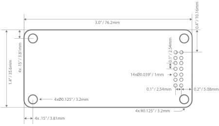

colour palette
toolkit download

colours
In order to ensure that your ColourCV plays nicely with others, design your ColourCV to the following electrical specifications:
- Gain: 1 (0db) / or if doing a distortion, gain can be greater than 1
- Input Impedance: >10kΩ
- Output Impedance: <=1kΩ
- Power Consumption: 50ma
- Supply Voltage: +-12V
- DC Offset: <=20mv
- Nominal Operating Level: +4dBu / 3.47 Vpp
- Control Voltage: -5V to +5V nominal (CTRL knob range)
Click here to see additional notes & recommendations:
Your ColourCV's PCB should be made from standard, 1/16" (1.6mm) thickness, rigid FR4. For aesthetic continuity, we recommend Ø.125" (3.2mm) beveled corners, but they are not necessary.
- Width: 3" (76.2mm)
- Height: 1.4" (35.6mm)
- Clearance Below PCB: 0.1” (2.54mm) minimum
- Clearance Above PCB: 0.58” (14.7mm) max for compatibility with 500 Series Palette
- Mounting Hole Size: ∅.125" (3.2mm)
- Mounting Hole Keep-out Clearance: ∅0.289 (7.4mm)

view larger image
ColourCV mates with the eurorack Colour Palette via a 14 pin connector. *NOTE original studio Colours will connect directly to a studio Colour Palette, however ColourCV boards must use the optional ColourADPTR adaptor board to mate with the studio Colour Palette.
view larger image
- Audio In
- Ground
- Audio Out
- Red LED
- Green LED
- Blue LED
- 16V+
- 16V-
- CTRL A
- CTRL B
- CTRL C
- CTRL D
- 12V+
- 12V-
ColourCV’s mount to the Palette via five connectors - four mechanical and one electrical.
ColourCV’s are mechanically secured to the Palette via four nylon standoffs. These standoffs are available in 9 lengths ("A" in the connector drawing), allowing you to customize your ColourCV's mounting height from the Palette. The nylon standoffs are locking on one end and removable, press-fit on the other.
view larger image
If you are selling your ColourCV, you must include the mechanical and electrical connectors in your kit or assembled unit. Both the mechanical and electrical connectors are standard off-the-shelf components available worldwide. Please download the Designer’s Toolkit PDF for information on sourcing connectors.
Your ColourCV will be identified on the front panel by an RGB LED. In order to set the colour of the LED, you must include the red, green, and blue LED current setting resistors in your ColourCV PCB.
You feed one side of the resistors with V+ and return the other side to their respective pins on the 14-pin connector. See the ColourCV prototyping board below for an example. Connecting these resistors to the two pins in each box marked “R, G, B” will easily let you define your colour. Rough values should be 20k to 300k.
view larger image